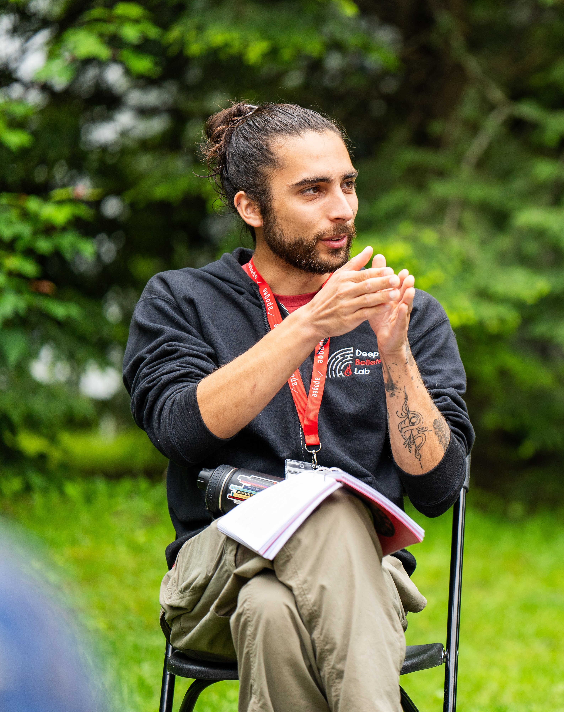

About Me
Professional Life
As a non-traditional student, I faced the challenge of reconciling my love for the outdoors and teaching with my desire to become a therapist. After a long search, I found a solution: adventure therapy, inspired by equine assisted therapy and therapy in natural settings. I envision a career as an adventure therapist, integrating hiking, backpacking, and rock climbing into my practice to empower and build the self-efficacy of my clients.
I graduated from the University of North Carolina at Chapel Hill with a dual major in Psychology and Information Science, focusing on how people and organizations operate in order to learn best how to promote wellness in our dynamic lives. While studying I worked on campus teaching aerial silks to students.
I am currently working as a rock climbing guide at Seneca Rocks Mountain Guides to hone my skills as an outdoors professional. My ultimate goal is to become an adventure/wilderness counselor. I believe that by combining talk therapy and outdoor pursuits, I can provide an innovative approach to mental health treatment and make a meaningful impact on the lives of my clients.
In my pursuit of adventure therapy, I have found a way to combine my passion for the outdoors, teaching, and helping others. It feels like the perfect fit for me, and I look forward to the challenges and rewards this career path will bring.
Personal Life

I am a hobbyist photographer and adventurer. I enjoy finding creative ways to link different outdoor sports and modes of human powered transportation, and showcasing the beauty of the places my adventures take me. I've found that outdoor adventures are many times more meaningful and memorable when they are shared; I take great joy in sharing the knowledge I've worked hard to earn in the years I've been seriously engaging in outdoor pursuits!
My photography phases seem to wax and wane with other phases of my life. Seeing so many beautiful and remote places in the course of my travels and adventures has sparked an interest in types of photography I had never been able to get a handle of, especially landscapes.